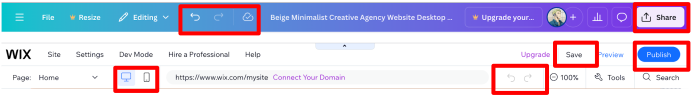

UI Design Overview
Given that our project is targeted to a wide range of users, from programmers to designers - all with different levels of experience; we had to design a UI that would cater to these different groups. A careful balance was considered to create a UI that allowed for experienced designers to have ample avenues to compose and customise but not inundate regular users with too many features. Similarly, the UI needed to be intuitive but at the same time, not compromise on the application’s capabilities.
We referenced highly popular design products such as Wix and Canva, using Jakob Nielson’s 10 Usability Heuristics for UI Design to guide our design process [1].
Design Principles
Canva’s editing studio affords an elegant UI design that fulfills many of Nielson’s Usability Heuristics. In particular, the side tab which contains all the editing features, from adding elements to text, is clearly and concisely nested on the left. This creates a functional, non-cluttered layout. Additionally, the structure that side tabs afford allows for Information Architecture (IA) to be practised. IA is an essential design principle that breaks down complicated and complex interfaces into logical, useful components that users can use to accomplish their tasks [2]. Furthermore, we took heavy cues from a well-researched Medium article detailing the essential features a side tab must have, especially from its width and size - for space optimisation - and a quick search feature- for maximum efficiency and convenience [3].

| Design Feature | Usability Heuristic | Implementation into Blueprint AI |
|---|---|---|
| Customisation sidebar | Recognition rather than recall | All fields and labels are visible and labelled on the left of the UI (adding elements, textboxes, etc). Makes it easy for the user to access. |
| Flexibility and efficiency of use | Users have many customisation and personalisation options as company logos, drawings can be uploaded and stored in the sidebar for use. | |
| Aesthetic and minimalist design | Each section in the sidebar displays only relevant information, the sidebar is also portioned distinctly, ensuring key features are presented. |
We also took direction from the top bars of Wix and Canva. These bars contained crucial project level information and essential functions needed for the user to save, publish, undo their work. The buttons were clearly labelled or had icons that were established and commonly recognised for users - which is highly effective in conveying important information to the user without taking up much space [4]. Additionally, on the top bar of the Wix page, the buttons to toggle between computer view and mobile phone view were ingeniously formatted - with this being a key feature of our project, we followed Wix’s stylish incorporation. This design was also incorporated into our sketches and eventually the final UI design of our project.
| Design Feature | Usability Heuristic | Implementation into Blueprint AI |
|---|---|---|
| Project level top bar | Visibility of system status | Flags were added to let the user know if they are in editing mode and if their work was saved up to date. |
| Match between the system and the real world | Labels added and icons used are well-known, such as the undo-redo buttons, download button, etc. | |
| User controlled freedom | Clearly marked undo-redo buttons and exit buttons were included. | |
| Consistency and standards | Project layout is modelled after commonly used, industry-leading UIs such as Wix and Canva |
We improved and innovated on the AI features in Wix and Canva. Since one of the main selling points of Blueprint AI is the use and integration of AI into the UI development and design process, we expanded upon the AI functionality in the UI and revamped its visibility, usability and accessibility.
For Wix and Canva, AI was not a prominent feature and is relegated into the corner of the left sidebar, shifting the focus onto the user’s own input and customisation. Furthermore, the use of AI is severely limited and restricted. As we envisioned AI to be woven seamlessly and tailored into all aspects of UI creation, we deployed an AI chat bot system which is featured prominently in the UI whilst maintaining the main customisation features a user can apply. We ensured that the chat box design also adhered to key UI principles by relying on visual cues such as a ‘Blueprint AI is typing…’ indicator to alert the user that their prompt is being handled [5]. These subtle cues guide the user through using the chatbot effectively.

| Design Feature | Usability Heuristic | Implementation into Blueprint AI |
|---|---|---|
| AI chatbot / AI features | Error prevention | Chatbot design allows recording of prompts and logs changes and conversations, allowing for previous builds to be re-generated prior to an error. |
| Help users recognise, diagnose, and recover from errors | AI suggestions highlight overflows and obscured elements clearly. | |
| Help and documentation | Chatbot allows for easy search and retrieval of project features through querying the AI. |